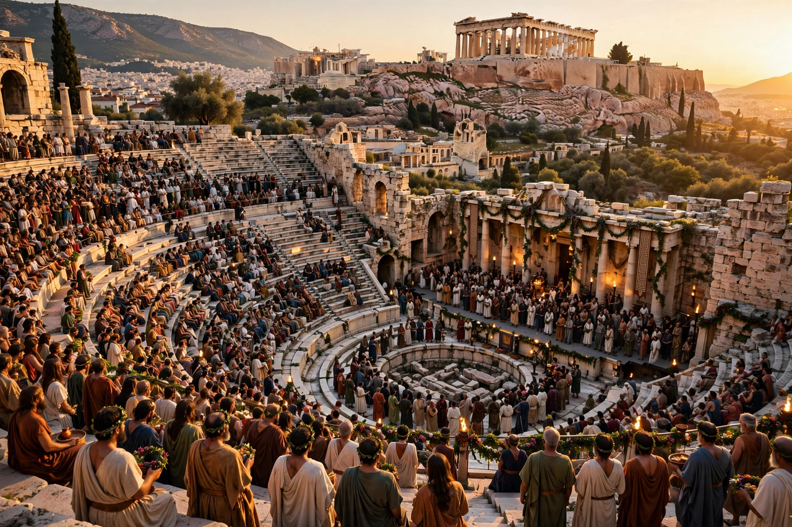

| Genre | Religious festival; dramatic competitions |
|---|---|
| Location | Theatre of Dionysus, Athens |
| Held | Month of Elaphebolion (late March), annually |
| In honour of | Dionysus Eleuthereus |

The City Dionysia (also called the Great Dionysia) was an ancient Athenian festival held each spring in honour of the god Dionysus. It was the city's most prestigious celebration and the principal venue for the competitions in tragedy, comedy and lyric poetry that produced the surviving masterpieces of Greek drama.
Tradition credited the tyrant Peisistratus with organising the festival in the sixth century BC, around 534 BC — the date associated with Thespis, said to be the first actor and the first winner of the tragic competition. The festival honoured Dionysus Eleuthereus, whose cult image had been brought to Athens from Eleutherae on the Boeotian border.
Events began with a grand procession (pompē) escorting the wooden statue of Dionysus through the city to the theatre on the south slope of the Acropolis, accompanied by phallic symbols, sacrificial bulls and offerings. In the classical period the city also used the occasion for civic display: tribute from Athens' allies was paraded, war orphans raised by the state were presented in hoplite armour, and public honours were announced.
The dramatic competitions occupied several days. Three tragic poets each presented a tetralogy — three tragedies and a satyr play — and five comic poets presented one comedy each. Performances were funded by wealthy citizens called chorēgoi as a public duty, and prizes were awarded by judges chosen by lot. Aeschylus, Sophocles and Euripides all competed at the City Dionysia, as did the comic poet Aristophanes.
The festival is the institutional setting in which Western theatre emerged: the words "tragedy" and "comedy", the chorus, and the three-actor convention all developed within its competitions. Its rural counterpart, the Rural Dionysia, was celebrated in the demes of Attica in midwinter.